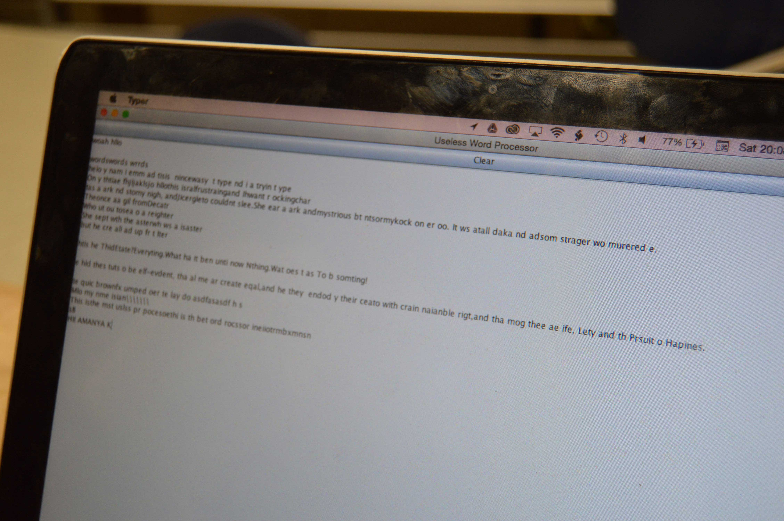
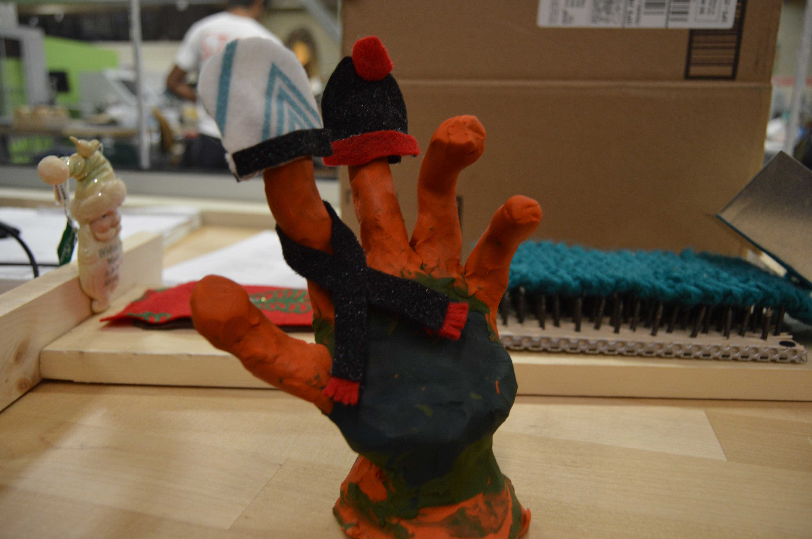
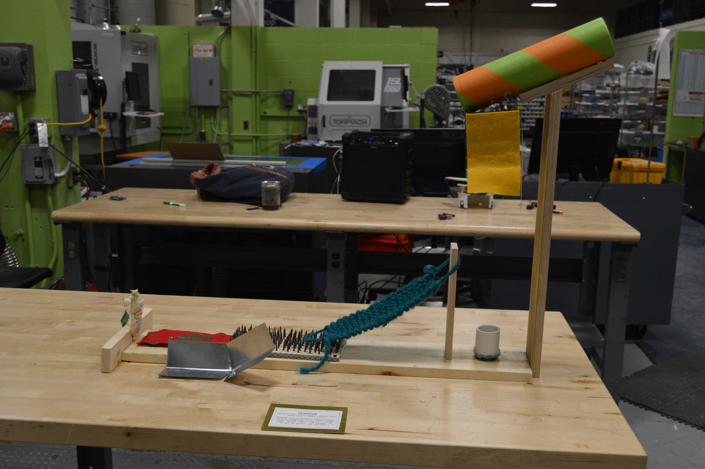
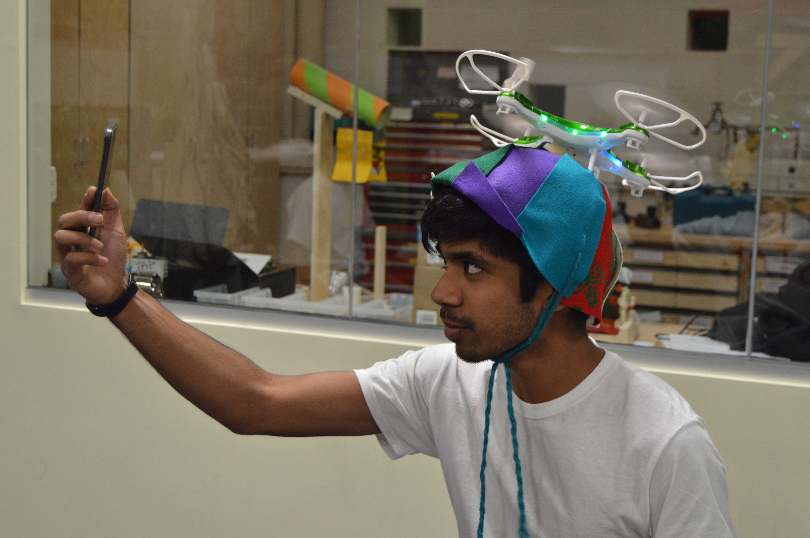
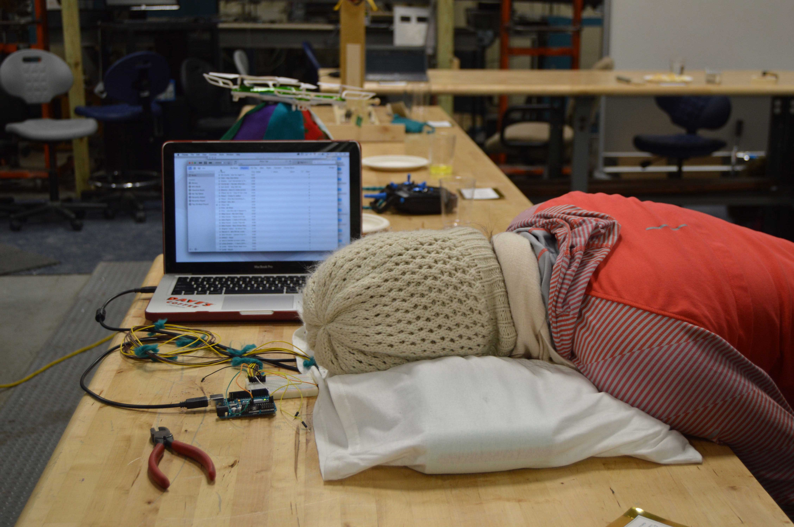
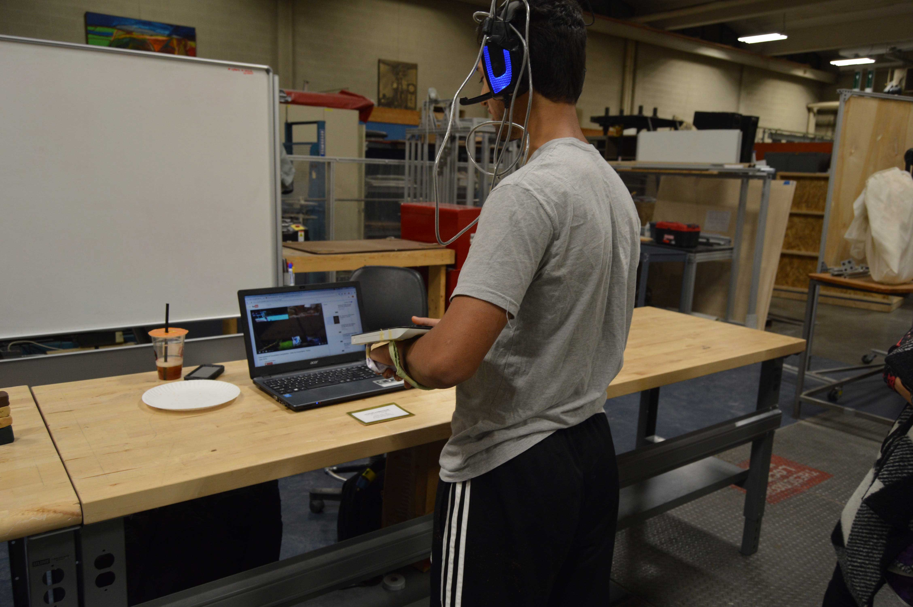
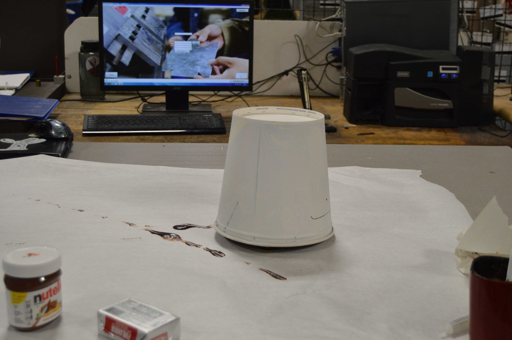
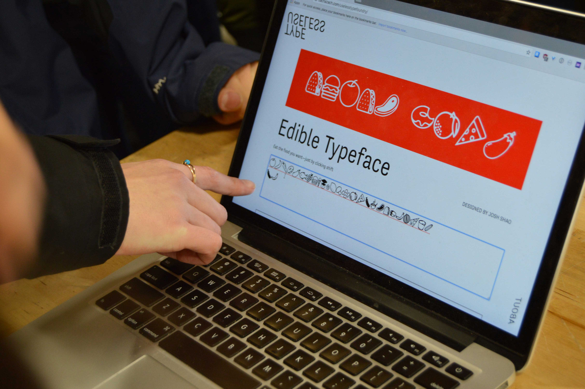
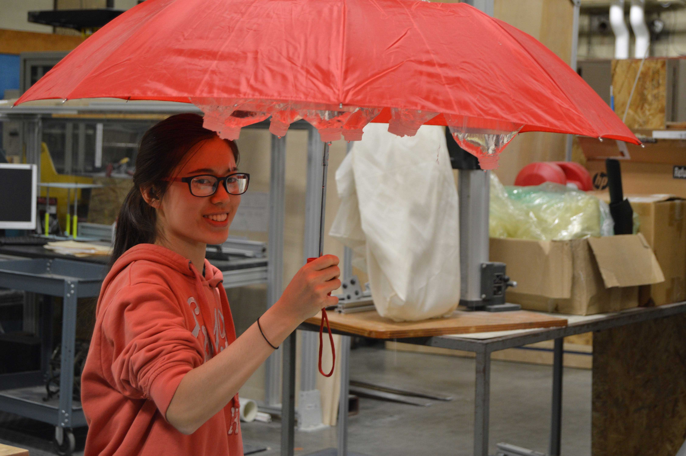

Interesting Projects
HOW TO SCREWArjun NarayenA website about screwing. (arjunnarayen.me/howtoscrew) |

|
PHONE BLOCKJacob DouglasIt's a phone charger that makes it very hard to tell if your phone is actually charging or not. |
|
USELESS WORD PROCESSORDavid SchurmanWord processors, like Microsoft Word, have become an important and universal part of our society. I wanted to take the highly effective and user-friendly concept of a word processor and make it highly ineffective and frustrating. As you type into the Useless Word Processor, it will randomly change some of your keystrokes to backspaces, making what you write almost completely unintelligible. Enjoy! |
 |
FINGER HATSElizabeth AustinPerfect for when your fingertips get chilly while wearing fingerless gloves. |
 |
ARDUINO TOASTERTania Yu + Dan WanWarm your CPU (and any bagels you place near it) up to the desired temperature by running as memory-intensive and inefficient a program as possible! |
|
DISASTERHannah Blakely + Erin Bugbee + Shawna Cheng + Wendy Cohen + Sophie SaskinInteractive disastrous marble track. Festive cardboard chute, felt ladder, knit bridge, bed of nails, cup of water, metal track, red carpet. Try to get to Santa. (Be careful.) |
 |
HAT + FLYErin Cole + Ethan Mok + Jeremy JoachimWorld-champion drone racers Erin Cole and Ethan Mok worked with drone-phobic citizen Jeremy Joachim to create HAT + FLY, a wearable that channels from the pointless wonder of a propeller hat. |
 |
PILLOW TALKAnya Parakh + Raina Wellman + Tiffany Chiu + Khue TruongIt’s been a long day, you’re exhausted and want nothing more than to sink into the softness of your pillow. Except, just as your brain’s starting to give away and you’re on the verge of sleep you hear something… ”Pssssst, you awake?” |
 |
INVERTED KITCHEN UTENSILSKatie WuWe often take for granted the utility of various utensils used in the kitchen. For example, we expect knives to cut, forks to stab, and spoons to be able to hold some kind of liquid. This series of kitchen utensils has an essential component of their form altered so that they become unusable for their traditional purpose. |
|
SCREAMLEANMACHINELucas Kasser + Laura Blackstone + May Tomic + Josh RoyRoses are red, Violets are blue. WiiFit board mouse, screaming occurs too. |
 |
NUTELLAPRESENCERobert Wang + Kenta Kondo + Mandi CaiWhy have telepresence when you can have Nutellapresence? This adorable creature shits out Nutella whenever it encounters an obstacle. But you can't be mad at Nutellapresence, because no one gets mad at Nutellapresence (just look at it). And no one hates Nutella. |
 |
USELESS TYPE FOUNDRYZach Deocadiz + Josh ShaoBased in Providence, RI, Useless Type Foundry is a joint venture between Zach Deocadiz and Joshua Shao, who have collaborated since 2016 on various typeface projects. The company publishes useless fonts developed by Deocadiz and Shao, their staff, and outside collaborators, and also represents the two and their team when they work together on type design projects. |
 |
Umm...brellaGrace Young + Jillian Cai + Kay Liang + Danny KimEvery time you collect milk from a cow's udder, you'll shudder, and think, of this Umbrella, that rains on your fella. |
 |